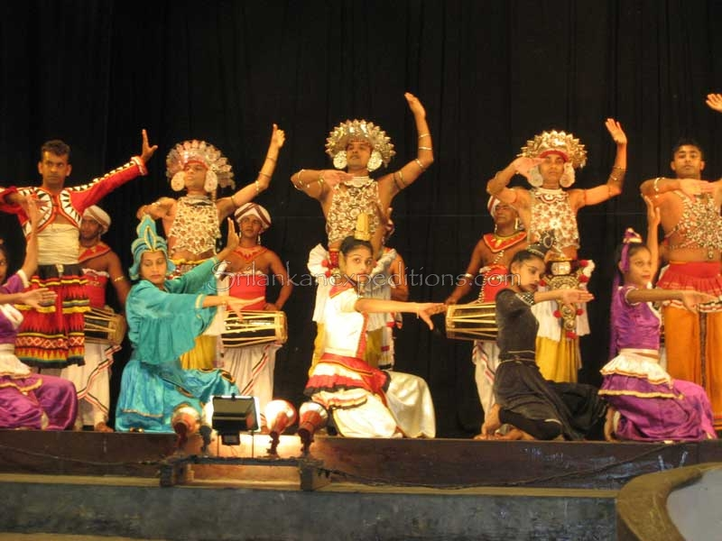

Day 1
- Meet with our driver in Colombo
- Transfer to Sigiriya – Approximately 4 hours drive
- Visit Dambulla Cave Temple
- Visit Sigiriya Rock Fortress
- Overnight stay in Kassapa’s Lion’s Rock Hotel in Sigiriya
Day 2
- Breakfast at Kassapa’s Lion’s Rock Hotel in Sigiriya
- Elephant back ride in Habarana
- Bullock cart trip in Habarana
- Overnight stay in Kassapa’s Lion’s Rock Hotel in Sigiriya
- <

Day 3
- Breakfast at Kassapa’s Lion’s Rock Hotel in Sigiriya
- Transfer to Anuradhapura – 1 hours drive
- Explore the historical city of Anuradhapura and Mihintale
- Overnight stay in Lion’s Rock Hotel in Sigiriya
- <
Day 4
- Breakfast at Kassapa’s Lion’s Rock Hotel in Sigiriya
- Transfer to Polonnaruwa – 1 ½ hours drive
- Explore the historical city of Polonnaruwa and historical tanks built by the Kings of Sri Lanka
- Safari game drive in Minneriya National Park in the afternoon (approximately at about 4 pm)
- Overnight stay in Lion’s Rock Hotel in Sigiriya
Day 5
- Breakfast at Kassapa’s Lion’s Rock Hotel in Sigiriya
- Transfer to Kandy – Approximately 2 hours drive
- Visit a Spice Garden on the way
- Visit Temple of Tooth Relic of Lord Buddha
- Overnight stay in Swiss Residence Hotel in Kandy
- 
Day 6
- Breakfast at Swiss Residence Hotel in Kandy
- Visit Pinnawala Elephant Orphanage
- Visit Royal Botanical Gardens of Peradeniya
- Attend to cultural show in the evening in Kandy
- Overnight stay in Swiss Residence Hotel in Kandy
Day 7
Breakfast at Swiss Residence Hotel in Kandy
Transfer to Colombo – Approximately 4 hours
Home Locations Tours Excursions About Us Contact Reviews
Our Payment Partners